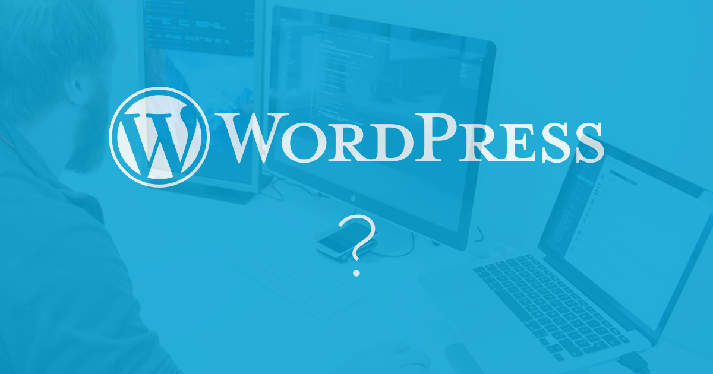

Do you need a Wordpress site?
Wordpress powers a staggering 25% of websites today1. This huge market share makes the platform well-known, even to those outside of the web industry. We often have clients come to us asking specifically for a Wordpress website. We wouldn't be doing our job as experts unless we challenged assumptions to ascertain what the client is really trying to achieve. To that end, the first question we usually ask is 'Is Wordpress right for you?'

One size fits none
We love Wordpress. It offers clients a wide range of functionality, excellent extensibility and, as it's so popular, there are an abundance of PHP/Wordpress developers out there to take on additional work if it is requried.
However, there are scenarios where Wordpress may be sub-optimal for a client's objective. Instead of insisting on a Wordpress build, a client could consider some of the alternatives. The web is an iterative industry. Sites can be improved upon and, with some thought at the start of the project, moved to different platforms fairly easily. Here are some examples of situations which may not require a Wordpress build.
The static site
If the content of a site doesn't change much, or at all, then coding up a theme to use Wordpress may be an extra step which doesn't need to be taken. When building Wordpress sites at Flo Design we code up the front-end templates before converting to a PHP theme, which allows quick iteration while the design is still relatively fluid to ensure it meets the needs of the client. We do our initial coding in the Middleman static-site generator so all the considerations of a production-ready site (minified CSS and Javascript, optimised images etc.) are already in place. If the content doesn't need to change then we can deploy at that point and the client has their site live.
If your content rarely, if ever, changes consider using a static site generator tool. The site can be put live quicker and the templates can always be adapted for Wordpress at a later date.
The e-commerce site
E-commerce is a huge growth area and Wordpress has come along leaps and bounds in the sector, with great plugins like WooCommerce giving a drop-in shopping cart. However, e-commerce in Wordpress is still fairly basic and doesn't offer some of the more complex functionality that a site owner may need to do business. This is usually evident with stock management as most clients will have specific needs when it comes to integration with their systems. Admittedly, most e-commerce solutions have some foibles and rarely offer everything a client will need but, unless the store will be very basic, it pays to invest a bit more and get a site that customers will enjoy using and will keep them coming back; as well as keeping the staff who run the store sane!
While Wordpress allows for extensibilty in the form of plugins, the architecture can make it difficult to create some of the more complex functionality needed by storefronts. Consider adapting a specialist e-commerce software solution or, in the case of very specific needs, developing a custom solution which will do exactly what you need it to.
The web app
We'd all love to create the next Facebook and get some of Zuckerberg's millions. Rushing into implementing your multi-million pound idea on the most popular platform, however, is a recipe for disaster. At first it may seem better to use a ubiqitous technology to develop the idea but problems quickly arise when the architecture of Wordpress collides with the direction your app needs to go in. Wordpress' plugins can get you some of the way but to create a scalable app you'll need to go custom. It's this notion of scalability when creating complex applications that requires the use of the most flexible solution available. Wordpress sacrifices some of that flexibility for familiarity.
Wordpress will get you some of the way but the nature of complex web apps requires flexibility. You may be able to choose from a wide range of developers when using Wordpress but the likely need for a custom plugin quickly eliminates the familiarity gained by using Wordpress.
In conclusion
Wordpress is a fantastic platform that covers a wide-range of needs. This is further extended by a large library of plugins. It has a structure which many developers are familiar with and is easy to set up, even for non-developers. However, it can be worth taking a step back at the start of a project and thinking about whether Wordpress is the best choice and seeing what alternatives might be a better fit. Make the tech fit the project and business goals, not the other way around.